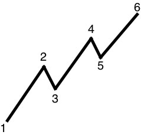
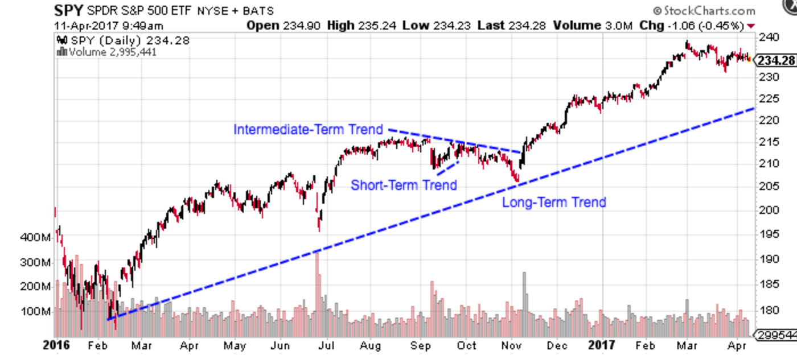
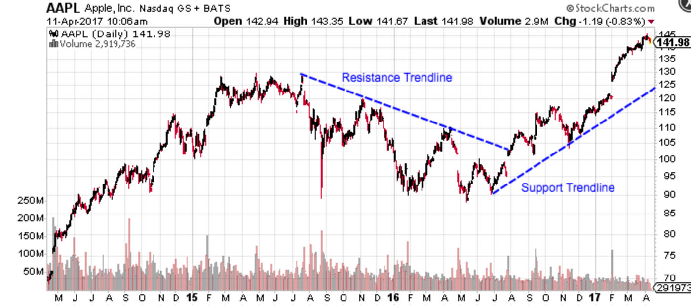
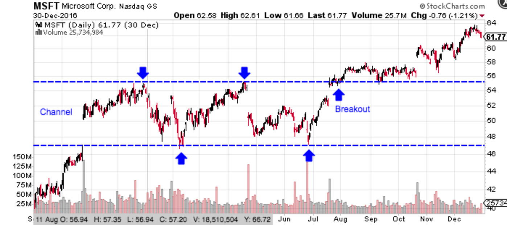

A Formal Definition
Trends aren’t always easy to spot because prices almost never move in straight lines. Rather, prices tend to move in a series of highs and lows over time. In technical analysis, it is the overall direction of these highs and lows that constitute a trend. An uptrend is classified as a series of higher highs and higher lows, while a downtrend consists of lower lows and lower highs.
Types of Trends
There are three types of trends:
- Uptrend
- Downtrend
- Sideways / Horizontal Trends
Trend Lengths
In addition to their direction, trends can be classified in terms of their length. Most traders consider trends short-term, intermediate-term, or long-term. Long-term trends occur over a timeframe of longer than one year; intermediate-term trends occur over one to three months; and, short-term trends occur over less than one month.
Trends are also embedded within one another. For example, Figure 1 above is an example of a long-term five-year trend and Figure 2 is a two-month subset of that trend. In other words, long-term trends consist of a series of intermediate-term trends which consist of a series of short-term trends. Long-term uptrends may have several short- and intermediate-term downtrends along the way.
When analyzing a trend, it’s important that the chart is constructed to best reflect the type of trend being analyzed. Daily or weekly charts are best for identifying long-term trends, while minute or hourly charts are best for short-term trends. It is also important to remember that long-term trends carry greater weight than short-term trends. For instance, a one-month trend isn’t as significant as a five-year trend.
Trendlines
A trendline is a simple charting technique whereby a line is added to a chart to represent the trend in a market or stock. Drawing a trendline is as simple as drawing a straight line that connects lower lows or higher highs to show the general trend direction. These lines are used to cut through the noise and show where the price is headed, as well as identify areas of support and resistance. Support levels are where the price rebounds higher multiple times, whereas resistance levels are where prices rebound lower multiple times. The strength of support and resistance levels are determined by the number of rebounds from the trendline.
Channels
A channel consists of two trendlines that act as strong areas of support and resistance with the price bouncing around between them. The upper trendline consists of a series of highs, while the lower trendline consists of a series of lows. A channel can slope upward, downward, or sideways, but regardless of the direction, the interpretation is always the same. Traders expect the price to trade between the support and resistance trendlines until it breaks out beyond one of the two levels, in which case traders can expect a sharp move in the direction of the breakout. Along with clearly displaying the trend, channels are used to illustrate important areas of support and resistance for the stock price.
The Importance of Trend
It is important to identify and understand trends so that you can trade with rather than against them. Two important sayings in technical analysis are “the trend is your friend” and “don’t buck the trend”, illustrating how important trend analysis is for technical traders.